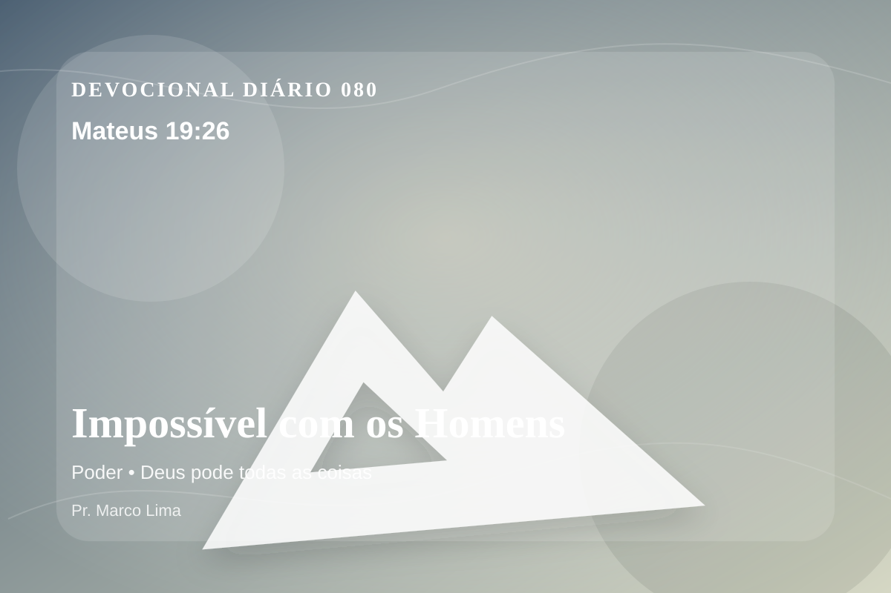

Impossível com os Homens
Jesus, fixando neles o olhar, respondeu: Aos homens é isso impossível, mas a Deus tudo é possível.
Pensamento
Este devocional começa com uma pergunta simples: que área da sua vida precisa ser iluminada por Mateus 19:26 hoje?
O impossível humano não limita Deus. Jesus aponta para a incapacidade do homem de salvar a si mesmo e para o poder de Deus em realizar o que a graça exige.
O tema de poder precisa ser recebido com simplicidade e seriedade. O ponto central não é apenas saber mais, mas viver de modo mais rendido. Este tema aponta para a maneira como Deus forma o coração do Seu povo por meio da Palavra. A aplicação correta não nasce de frases soltas, mas de uma leitura reverente, contextual e obediente do texto bíblico.
Examine se existe orgulho, comparação, medo, culpa escondida ou autossuficiência impedindo sua resposta ao Senhor. A graça não nos humilha para destruir; ela nos quebra para reconstruir em Cristo.
Arrependimento não é apenas sentir peso na consciência; é voltar-se para Deus, abandonar o caminho que entristece o Senhor e confiar que a graça de Cristo é suficiente para perdoar e transformar.
Este é o evangelho que sustenta toda aplicação: Jesus Cristo morreu pelos pecadores, ressuscitou em vitória e chama cada pessoa a responder com fé, arrependimento e uma vida rendida ao Seu senhorio.
Cristo não veio apenas melhorar comportamentos, mas salvar pessoas. Na cruz, Ele trata a culpa; na ressurreição, Ele abre caminho para uma nova vida.
Leve esta Palavra para o ponto mais concreto do seu dia. O fruto da meditação aparecerá quando Cristo governar uma reação, uma prioridade ou uma escolha.
Para Praticar Hoje
- Leia Mateus 19:26 lentamente e destaque uma palavra ou expressão central do texto.
- Confesse a Deus um pecado, resistência ou frieza espiritual que esta Palavra revelou.
- Declare sua fé em Jesus Cristo e pratique hoje uma atitude concreta de arrependimento e obediência.
Oração
Senhor Deus, eu recebo a Tua Palavra em Mateus 19:26 com reverência. Reconheço que preciso de arrependimento, perdão e nova vida. Creio que Jesus Cristo morreu pelos meus pecados e ressuscitou para me salvar. Lava meu coração, governa minha vida e conduz-me em obediência simples ao Teu evangelho. Em nome de Jesus. Amém.
{kind=link}